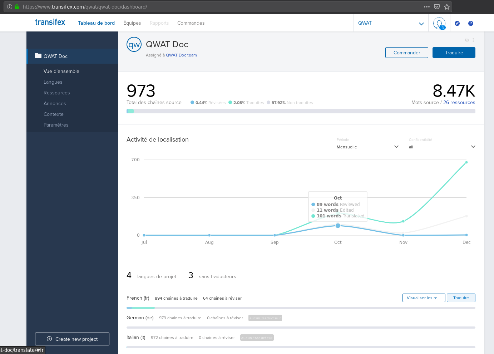

5. Příručka přispěvatele
Jak přispět k QWAT a spolupracovat s vývojáři.
Tato příručka je určena každému, kdo je ochoten přispět k QWAT. Najdete zde užitečné informace od odeslání vzorku dat až po rady ohledně funkcí nebo přispívání k dokumentaci.
Chcete-li jít dále, můžete se podívat na Příručku pro vývojáře
5.1. Předpoklady
Budete potřebovat účet GitHub. Vytvořte jej prosím zde: https://github.com/join.
5.2. Diskuse o funkcích
Hlášení chyb, požadavky na funkce, specifikace funkcí a veškerá spolupráce na QWAT probíhá nejprve v issues QWAT:
To je výchozí místo pro všechny požadavky. Pokud jsou ovlivněny další moduly (jádro QGIS, datový model, pluginy), vytvoří se v příslušných projektech další lístky.
Níže naleznete rady, jak přispět.
5.2.1. Našel jsem chybu v QWAT, co mám dělat?
Pokud zjistíte, že chyba je problémem QGIS, hledejte, zda neexistuje oprava na adrese https://issues.qgis.org/projects/qgis/issues/ a v případě potřeby přidejte nový záznam o chybě
Vytvořte nové issue zde: https://github.com/qwat/QWAT/issues. Zde uveďte jakýkoli předcházející problém.
Nezapomeňte zahrnout všechny důležité informace pro reprodukci chyby: minimální kroky, které je třeba sledovat, ukázková data, verze QGIS, použité možnosti …
Buďte jasní a struční. Jakékoli záznamy obrazovky nebo snímek obrazovky hodně pomůže.
Označte své issue jako „Bug“
Sledujte následující diskusi a v případě potřeby uveďte další informace
5.2.2. V datovém modelu jsem našel chybu, co mám dělat?
Založte zde také nové issue: https://github.com/qwat/QWAT/issues
- Pokud jste si stoprocentně jisti, že se jedná o chybu datového modelu:
označte své issue jako „Datový model“
zde založre nové issue: https://github.com/qwat/qwat-data-model/issues
odkazovat na tento nový problém v původně vytvořeném vydání QWAT
Pokud si nejste jisti, pomozte vývojářům kvalifikovat chybu
5.2.3. Chci novou funkci v QWAT, co mám dělat?
Založte nové issue zde: https://github.com/qwat/QWAT/issues
Popište pečlivě funkci s podrobnostmi, v případě potřeby připojte obrázky a makety
Označte issue jako „Vylepšení“
Zvažte financování rozvoje
5.2.4. Chci spolupracovat na specifikacích funkcí, co mám dělat?
Zkontrolujte stávající problémy zde
Přidejte komentáře do diskuse
5.3. Změny datového modelu
5.3.1. Potřebuji změnu v datovém modelu, jaký je proces?
ujistěte se, že požadovaná funkce je skutečnou změnou samotného datového modelu a nikoli aplikace
otevřete issue na GitHubu v projektu datového modelu (https://github.com/qwat/qwat-data-model/issues)
uveďte do svých issues jasné a stručné vysvětlení důvodů změny
nechat nějaký čas ostatním na odpověď
účastnit se diskuse
neváhejte zmínit dotčené osoby (například @vpicavet), což jim oznámí diskusi
Když se diskuse sblíží, dojde k rozhodnutí, zda tuto úpravu přijmout, nebo ne
OSLANDIA <http://oslandia.com/en/> _, na základě PSC, je manažerem vydání datového modelu a bude mít poslední slovo v případě nejasného trendu
5.3.2. Moje žádost o změnu byla považována za platnou. Co dál ?
Dva případy: můžete napsat změnu nebo chcete, aby to udělal někdo jiný.
5.3.3. Mohu napsat opravu sám, co mám dělat?
Přečtěte si vývojářskou příručku
Napsat opravu
pošlete pull request do úložiště qwat-data-model
správci to zkontrolují a sloučí
Uvědomte si, že nástroj pro nepřetržitou integraci automaticky spustí funkční testy a testy shody na základě vašeho požadavku na vyžádání. Pamatujte, že oprava musí být provedena ve dvou částech: soubory základního modelu používané k inicializaci a soubory delta používané k migraci existujících verzí databáze. Oprava musí vést ke stejnému stavu mezi procesem inicializace a migrace, aby byla platná.
5.3.4. Chci, aby někdo napsal změny, jaký je postup?
specifikace je zapsána jako nový komentář k problému (vy nebo někdo jiný)
zkoumají se dopady na další části QWAT a otevírají se odpovídající issues (konkrétně na projektu qwat / QWAT)
je proveden požadovaný odhad financování
financování je nalezeno
probíhá vývoj
v úložišti qwat-data-model se vytvoří PR
správci to zkontrolují a sloučí
5.3.5. Chci do modelu přidat některá vlastní pole / tabulku, jak to mám udělat?
5.4. Dokumentace
5.4.1. Jak přispět k dokumentaci
Dokumentace musí být psána pouze v angličtině, překlady jsou prováděny v Transifexu, viz níže. Textový formát je rst (ReStructuredText), průvodce tohoto formátu je k dispozici na stránce A ReStructuredText Primer.
Dokumentace musí být jasná, jednoduchá a aktuální. Zejména se od vývojářů žádá, aby ke každé změně přidali dokumentaci svých funkcí na základě zásady „Píšete kód, píšete dokumentaci“.
Příručku k psaní dokumentace najdete na stránce Write the docs a konkrétněji na stránce Documentation Principles
5.4.2. Překlad QWAT
QWAT používá Transiflex, překladatelskou platformu s otevřeným zdrojovým kódem, která umožňuje překlad QWAT do různých jazyků. Všechny překlady jsou umístěny na adrese Transifex.com, která poskytuje webovou aplikaci umožňující překladatelům psát, odesílat a spravovat své překlady.
5.4.2.1. Začínáme s Transifexem
Přispěvatelé, kteří chtějí pomoci s překladem QWAT, najdou překladové projekty na Transifexu.
5.4.2.1.1. Zaregistrujte se k účtu
Přejděte na https://www.transifex.com/signup/ a vyplňte formulář a vytvořte si zdarma účet Transifex, pokud jej ještě nemáte.
5.4.2.1.2. Připojte se k překladatelskému týmu
Po nastavení účtu přejděte do projektu QWAT a staňte se překladatelem jazyka.
Stránka projektu uvádí jazyky, které mají překladové projekty. Pokud je uveden váš cílový jazyk, klikněte na název jazyka a přejděte na stránku jazyka. Následuje příklad výběru projektu francouzského překladu.
5.4.2.1.3. Překlad s Transifexem
Poté, co se stanete členem překladatelského týmu, můžete vybrat jakýkoli zdroj v projektu a začít jej překládat.
Nápovědu k Transifexu najdete v dokumentu Transifex translators doc.
Každá jazyková stránka obsahuje seznam různých zdrojů k překladu.
5.4.2.1.4. Obecný princip automatického vytváření přeložených stránek
Pokaždé, když je dokumentace upravena, je „hlavní“ verze přeložena pomocí nepřetržité integrace. Pokaždé, když se vytvoří „tagy“, provede se překlad pro označenou verzi: toto je verzování.
Stránky HTML jsou přesunuty do jiné větve s názvem gh-pages v úložišti, v podadresáři verze. Tato větev by neměla být upravována přímo.
Jsou dostupné prostřednictvím odkazů http://qwat.github.io/docs/TAG/LANG/html/, kde TAG je název verze a LANG je jazyk dokumentace.
Přesměrování je nastaveno tak, aby se předešlo chybám 404 u stránek githubu:
http://qwat.github.io/docs/ -> http://qwat.github.io/docs/master/en/html
http://qwat.github.io/docs/TAG/ -> http://qwat.github.io/docs/TAG/en/html